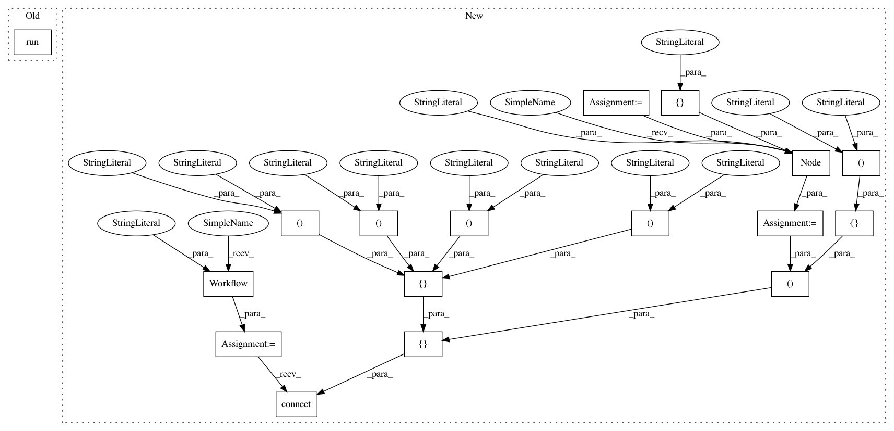

e0c9d018aca7bf05486c385484d5ed1c37bac423,pynets/diffconnectometry.py,,coreg_mask_to_diff,#Any#Any#,177
Before Change
flirt.inputs.out_matrix_file = "/tmp/out_flirt.mat"
flirt.inputs.in_matrix_file = "%s%s" % (dwi_dir, "/xfms/MNI2diff.mat")
flirt.inputs.apply_xfm = True
flirt.run()
args = "-bin"
maths = fsl.ImageMaths(in_file=out_file, op_string=args, out_file=out_file)
print("\nBinarizing custom mask...")
os.system(maths.cmdline)
After Change
dwi_infile = "%s%s" % (dwi_dir, "/dwi.nii.gz")
out_file = "%s%s" % (dwi_dir, "/mask_custom_diff.nii.gz")
mask_transforms_wf = pe.Workflow(name="wm_transforms")
inputnode = pe.Node(niu.IdentityInterface(fields=["dwi_infile", "mask", "out_file", "mat_file", "dwi_dir"]),
name="inputnode")
inputnode.inputs.dwi_infile = dwi_infile
inputnode.inputs.mask = mask
inputnode.inputs.out_file = out_file
inputnode.inputs.mat_file = "%s%s" % (dwi_dir, "/xfms/MNI2diff.mat")
inputnode.inputs.dwi_dir = dwi_dir
flirt = pe.Node(interface=fsl.FLIRT(cost_func="mutualinfo"), name="coregister_wm")
flirt.inputs.apply_xfm = True
flirt.inputs.out_matrix_file = "/tmp/out_flirt.mat"
def bin_mask(out_file):
import nipype.interfaces.fsl as fsl
import os
args = "-bin"
maths = fsl.ImageMaths(in_file=out_file, op_string=args, out_file=out_file)
print("\nBinarizing custom mask...")
os.system(maths.cmdline)
return out_file
bin_mask = pe.Node(niu.Function(input_names=["out_file"], output_names=["out_file"],
function=bin_mask), name="bin_mask_node")
mask_transforms_wf.connect([(inputnode, flirt, [("dwi_infile", "reference"), ("mask", "in_file"),
("out_file", "out_file"), ("mat_file", "in_matrix_file")]),
(flirt, bin_mask, [("out_file", "out_file")])
])
return mask_transforms_wf
def build_coord_list(coords, dwi_dir):
In pattern: SUPERPATTERN
Frequency: 3
Non-data size: 17
Instances
Project Name: dPys/PyNets
Commit Name: e0c9d018aca7bf05486c385484d5ed1c37bac423
Time: 2018-10-13
Author: dpisner@utexas.edu
File Name: pynets/diffconnectometry.py
Class Name:
Method Name: coreg_mask_to_diff
Project Name: dPys/PyNets
Commit Name: e0c9d018aca7bf05486c385484d5ed1c37bac423
Time: 2018-10-13
Author: dpisner@utexas.edu
File Name: pynets/diffconnectometry.py
Class Name:
Method Name: create_mni2diff_transforms
Project Name: dPys/PyNets
Commit Name: e0c9d018aca7bf05486c385484d5ed1c37bac423
Time: 2018-10-13
Author: dpisner@utexas.edu
File Name: pynets/diffconnectometry.py
Class Name:
Method Name: coreg_mask_to_diff
Project Name: dPys/PyNets
Commit Name: e0c9d018aca7bf05486c385484d5ed1c37bac423
Time: 2018-10-13
Author: dpisner@utexas.edu
File Name: pynets/diffconnectometry.py
Class Name:
Method Name: coreg_WM_mask_to_diff